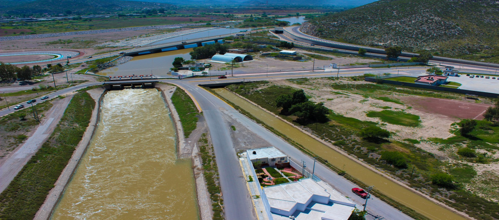

Justificación
¿Qué es? Agua Saludable para la Laguna, es un proyecto que contempla una serie de obras y acciones que permitirán captar, conducir, potabilizar y distribuir el agua superficial a las comunidades de la Comarca Lagunera.
Su objetivo principal es asegurar el suministro de agua potable, en cantidad y calidad apropiadas, para una población en crecimiento. Actualmente existen rezagos en la atención del servicio de agua potable de las comunidades de la Comarca Lagunera y se incrementarán con el paso tiempo si no se incorpora una nueva fuente.
En términos generales, Agua Saludable para La Laguna plantea claros beneficios para todos los habitantes de la Comarca, pues con este intercambio de aguas disminuirá el creciente riesgo para la salud por el consumo de agua con exceso de arsénico; aumentará el caudal en el Parque Estatal Cañón de Fernández todo el año; mejorará el uso y consumo de agua potable entre la población, así como para la agricultura.
Como antecedentes, desde los años 50´s se documentó la relación existente entre la incidencia de algunas enfermedades y el hidroarsenicismo en la Laguna y se observó que el río Nazas presenta mejor calidad que el agua de los acuíferos.
Durante los 80´s, se construyó el Sistema Interestatal, para llevar agua subterránea de zonas con menor concentración de arsénico, a las localidades donde el agua presentaba mayores concentraciones como son Finisterre, Horizonte, Lucero y el sureste de Matamoros.
En el año 2008, la CONAGUA, en coordinación con la Comisión Estatal de Agua y Saneamiento de Coahuila, la Comisión Estatal de Aguas de Durango y los Organismos Operadores, efectuaron un estudio de factibilidad de fuentes de abastecimiento de agua potable para la Laguna, que identificó diversas áreas de oportunidad, concluyendo para todos los casos, la conveniencia de contar con el agua del río Nazas como una fuente estratégica de abastecimiento.
Se analizó el Plan MEVA, confirmando que la gran distancia a la cual se encuentran los ríos de la Vertiente del Pacífico, que superan los 300 kilómetros, junto con la necesidad de bombeo para traer el agua, supera los 500 metros de altura, lo que implican inversiones cuatro veces mayores a otras alternativas.
En 2013 CAED realizó un proyecto ejecutivo de las obras: una presa derivadora, un acueducto, una planta potabilizadora y ramales de distribución; en 2014 se realizó un Estudio para la estabilización del acuífero de La Laguna y en el 2015 otro sobre la Tecnificación para los módulos de riego Rodeo y San Jacinto, como una medida para recuperar pérdidas de agua en el riego y destinarlas al suministro de agua potable.
Es así que el Gobierno de México, en el año 2020, retomó el proyecto y por iniciativa del Ejecutivo y de los Gobiernos Estatales de Coahuila y Durango. Sumados con las autoridades municipales y con el respaldo de integrantes del sector agropecuario que comprometieron derechos por 50 millones de metros cúbicos.
Además respaldaron la actualización de los estudios para hacer de Agua Saludable para la Laguna, una realidad. En el que se invertirán 11 mil millones de pesos.
El proyecto pretende utilizar un mínimo porcentaje del volumen del agua almacenada en el sistema de presas del río Nazas y sustituir el agua subterránea por agua superficial para la población, se favorecerá la recarga del Acuífero Principal al dejar de extraer agua de algunos pozos.